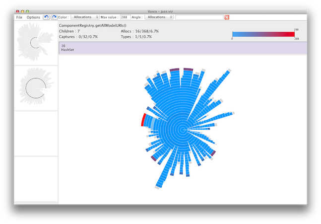

Vasco is an interactive visualization tool for help in identifying churn in Java applications. Here's a screenshot of Vasco showing churn in an execution:
Vasco is available as a single executable jar for all supported platforms (MacOS, Linux, Windows). The latest version is 0.1.0.
Download (all platforms)To launch Vasco, you will need to have a Java Runtime Environment. Then, invoke the following command:
java -jar vasco-all-0.1.0.jar
Optionally, you can specify the name of an input file to open on the command line.
The source code is available from the GitHub project page under the Modified BSD License.
Vasco supports two formats as input: a simple textual call graph format, and a bundle format that includes connection graphs.
| Benchmark | Callgraph only (.acct) | Bundle (.viz) |
|---|---|---|
| Trade Direct-Standard | Download (157KB) | Download (2.4MB) |
| Trade Direct-WebServices | Download (2.9MB) | Download (82MB) |
| Trade EJB-Standard | Download (1MB) | Download (23MB) |
| Trade EJB-WebServices | Download (3.9MB) | Download (153MB) |
| Jazz | Download (4.9MB) | Download (175MB) |
{kind=link}